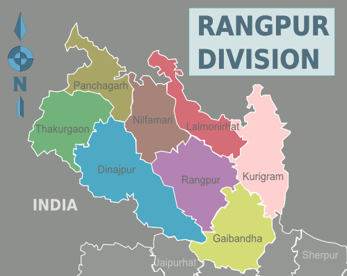

রংপুর বিভাগ বাংলাদেশের আটটি প্রশাসনিক বিভাগের একটি। এটি বাংলাদেশের উত্তরাঞ্চলের ৮টি জেলা নিয়ে গঠিত। ২০১০ খ্রিষ্টাব্দের ২৫ জানুয়ারিতে বাংলাদেশের সপ্তম বিভাগ হিসেবে ঘোষিত হয়।[১] রংপুর বিভাগের পূর্বে ভারতের অসম ও মেঘালয় রাজ্য এবং ময়মনসিংহ বিভাগের জামালপুর জেলা, পশ্চিম ও উত্তরে ভারতের পশ্চিমবঙ্গ রাজ্য এবং দক্ষিণে রাজশাহী বিভাগ অবস্থিত।